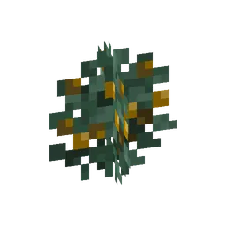

What spawns hereWat spawnt hier
| MobWezen | GroupGroep | WeightGewicht | Group sizeGroepsgrootte |
|---|---|---|---|
| Guh | animaldier | 100 | 3–5 |
| Pluisegeltje | extra spawn | 12 | 1–3 |
| Kaasmeesje | extra spawn | 12 | 1–3 |
| Guhbij | animaldier | 10 | 1–2 |
| Pluiseekhoorntje | extra spawn | 10 | 1–3 |
| Guh-uiltje | extra spawn | 5 | 1 |
StructuresBouwwerken
A forest of giant guh treesEen woud van reuzenguhbomen
A misty, mint-green forest in the Guhmension (about 10% of the surface; the mist is light, you see some 60–90 blocks far) under a lavender sky, with glowing vadspluisjes in the air and falling mint leaves. On soft vadsmos grow reuzenguhbomen (25–40 blocks tall, trunks 5–7 blocks thick with roots, branches and a huge crown) with guh faces in the bark looking every way, smaller vadshout trees, knabbelbessenstruiken (they don't prick, guhs walk right through), pink grass, flowers and guhnestjes. No monsters. Right-click a guh face with an empty hand for another mood: happy, sleepy, surprised or vads.
Een mistig, mintgroen woud in de Guhmensie (ongeveer 10% van het oppervlak; de mist is licht, je kijkt zo'n 60–90 blokken ver) onder een lavendelkleurige lucht, met gloeiende vadspluisjes in de lucht en vallende mintblaadjes. Op zacht vadsmos groeien reuzenguhbomen (25–40 blokken hoog, stammen van 5–7 blokken dik met wortels, takken en een enorme kroon) met guhgezichtjes in de schors die alle kanten op kijken, kleinere vadshoutbomen, knabbelbessenstruiken (die prikken niet, guhs lopen er gewoon doorheen), roze gras, bloemetjes en guhnestjes. Geen monsters. Rechtsklik een guhgezichtje voor een ander humeur: blij, slaperig, verbaasd of vads.
Het Vadswoud

Knabbelbessenstruik
Pick the yellow knabbelbessen (they grow back). Eat them, plant them, bake a taartje (8 hunger).Pluk de gele knabbelbessen (ze groeien terug). Eten, planten, of bak er een taartje van (8 honger).

Guh familiesGuhfamilies
- Wild guhs that spawn by themselves in the Guhmension now form a family: 1–2 parents and 1–3 babies, all the same variant. Bred babies join their parents' family.Wilde guhs die vanzelf in de Guhmensie spawnen vormen nu een gezin: 1–2 ouders en 1–3 baby's, allemaal dezelfde variant. Gefokte baby's horen bij het gezin van hun ouders.
- Babies walk in a line behind their parent: baby 1 behind the parent, baby 2 behind baby 1, and so on. Adorable. Vads, even.Babyguhs lopen in een rijtje achter hun ouder: baby 1 achter de ouder, baby 2 achter baby 1, enzovoort. Schattig. Vads, zelfs.
- At night every guh looks for a guhnestje within 20 blocks and sleeps in it (Zzz) with its family: it heals, and babies grow a bit. In the morning, or when hurt, they wake up.'s Nachts zoekt elke guh een guhnestje binnen 20 blokken en slaapt erin (Zzz) met zijn gezin: dat geneest, en baby's groeien een beetje. 's Ochtends, of als ze pijn krijgen, worden ze wakker.
- Your own tamed guhs sleep in a nest too while you're within 24 blocks (not when sitting or told not to wander).Je eigen tamme guhs gaan ook in een nestje slapen zolang jij binnen 24 blokken bent (niet als ze zitten of niet mogen rondlopen).
- Babies are easier to tame: a knabbelbes tames a wild baby 1 in 2 (big guhs don't want berries), and kaasknabbels get an extra 1 in 3 chance on a baby.Babyguhs zijn makkelijker te temmen: een knabbelbes temt een wilde babyguh 1 op 2 (grote guhs willen geen bessen), en kaasknabbels krijgen bij een baby een extra kans van 1 op 3.